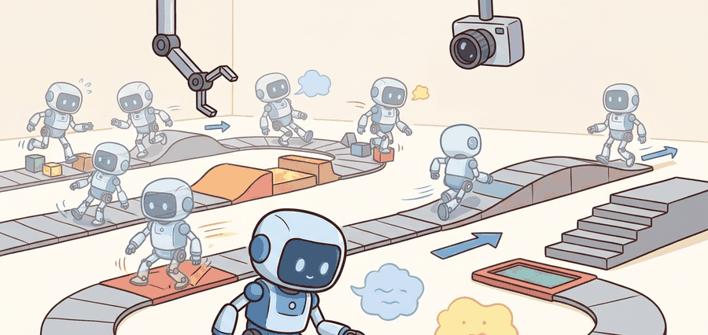

"GPU hours are only useful when they purchase better disturbance behavior."
A Locomotion Training Postmortem

This section assumes familiarity with policy-gradient updates and advantage estimation covered in sections 15.3 and 15.4, and with reward specification principles from section 18.2. The parallel-training techniques developed here are extended in section 45.4, which applies the same infrastructure to terrain adaptation and parkour. The sim-to-real gap that parallelism exposes is addressed in depth in section 20.2.
In 2019, a quadruped robot trained entirely in simulation walked onto a real forest trail and recovered from a stumble it had never physically experienced. The policy had seen that stumble thousands of times per training hour because 4,096 parallel simulators collectively covered rare contact events that a single sim would have missed for days. That result flipped how roboticists think about sample efficiency: the bottleneck is no longer data volume, it is whether the reward, termination, and randomization contracts are physically honest enough to be worth scaling. Here you will build that infrastructure, learn to audit it under scale, and understand why throughput without construct validity teaches the wrong behavior fast.
A legged robot crossing uneven ground encounters contact events that are individually rare but collectively decisive: a front foot landing on a rock edge while the opposite rear foot is mid-swing, combined with a slight lateral slope and a brief actuator delay. In a single simulator running at real-time speed, that combination might appear once every several hours of simulated walking; with 4,096 parallel environments each stepping at hundreds of Hz, the same combination appears thousands of times per training hour. Put concretely: a rare stumble that a single environment would see roughly once per week of continuous simulation is seen over 50,000 times in the same wall-clock period under full parallelism, giving the policy enough gradient signal to learn a recovery strategy rather than falling. This is what researchers call the coverage-not-speed argument for parallelism: throughput is the mechanism, not the goal.
With batched simulators, the training objective is usually a clipped or trust-region policy update over many parallel trajectories. For PPO, one common objective is $L^{\mathrm{clip}}(\theta) = \mathbb{E}[\min(r_t(\theta) \hat A_t, \mathrm{clip}(r_t(\theta), 1-\epsilon, 1+\epsilon) \hat A_t)]$, where $r_t$ is the policy ratio and $\hat A_t$ is an advantage estimate.
Parallelism changes the engineering problem. Correlated environment bugs, shared reward mistakes, and synchronized reset artifacts can make a policy appear strong across ten thousand workers while teaching the exact wrong behavior. The remedy is not less scale. It is better audit structure.
A fast RL stack is valuable only when the held-out terrain panel, transfer test, and failure taxonomy grow with it.
Theory
The main benefit of parallel RL in locomotion is coverage of contact events. Rare combinations of foot timing, terrain discontinuity, and actuator lag appear more often when the simulator fan-out is large.
The main risk is shared bias. If every environment uses the same flawed reward term, a thousand workers accelerate the same misunderstanding. This is why reward audits, termination audits, and observation audits belong in the same chapter as PPO code.
A solid locomotion training paper therefore reports both throughput numbers and construct-matched disturbance metrics on terrain not used to tune the controller.
A useful heuristic: run the training distribution through a contact-event histogram. If the tail events (foot slip on wet surface, mid-air yaw disturbance, simultaneous left-right leg collision) each appear fewer than a few hundred times per policy update batch, the policy cannot reliably learn from them. Doubling environment count is worth doing when it moves rare events from the tail into the body of the distribution; it is not worth doing when the bottleneck is reward specification or terrain diversity. The ANYmal and MIT Cheetah training setups both used on the order of thousands of parallel environments precisely because their terrain curricula generated long-tailed contact distributions that single-environment runs could not saturate.
- Freeze an environment manifest that defines terrain seeds, friction ranges, actuator delays, and reset logic.
- Train the policy with vectorized rollouts and log advantage statistics, termination reasons, and reward-term contributions.
- Evaluate on a held-out terrain panel that the training loop never sees.
- Replay at least one failed hardware or simulator trace inside the batch environment family.
- Only claim progress when held-out disturbance metrics and transfer metrics improve together.
Worked Example
The smallest trustworthy artifact for large-scale locomotion RL is a run record that reports update count, sample count, held-out metrics, and transfer tags in one place.
run = {
"num_envs": 4096,
"horizon": 24,
"updates": 1200,
"heldout_fall_rate": 0.08,
"heldout_velocity_error": 0.11,
"transfer_tags": ["rough_terrain", "payload_shift"],
}
samples = run["num_envs"] * run["horizon"] * run["updates"]
print(f"samples={samples}")
print(
{
"heldout_fall_rate": run["heldout_fall_rate"],
"heldout_velocity_error": run["heldout_velocity_error"],
"transfer_tags": run["transfer_tags"],
}
)Expected output interpretation. The sample count looks impressive, but the useful signal is the held-out fall rate and velocity error. A run with more samples but worse held-out disturbance behavior is not an upgrade.
Use Isaac Lab for GPU throughput, MJX when JAX-native pipelines matter, and RSL-RL or equivalent PPO tooling when you need a maintained actor-critic training core rather than a handwritten optimizer.
In Isaac Lab, a terminated environment is reset within the same physics step, so the observation returned after a done flag already belongs to the new episode. If your PPO implementation bootstraps the value at the terminal step without masking on dones, that bootstrap uses a value from the next episode's initial state, silently corrupting the advantage estimate for the final transition. Pass dones as a boolean mask to your GAE implementation and multiply the bootstrap term by (1 - done) before accumulating returns. RSL-RL does this correctly by default; hand-rolled training loops frequently do not.
Practical Recipe
- Freeze observation, reward, termination, and randomization manifests before sweeping hyperparameters.
- Train with enough parallelism to cover rare terrain-contact cases, but log per-term rewards and termination reasons.
- Hold out terrain classes, payload profiles, or sensor corruptions for evaluation.
- Validate the controller in a second simulator or a reduced hardware replay when possible.
- Promote only runs that improve both disturbance metrics and transfer evidence.
The most common failure is a reward term or reset rule that creates an easy exploit across every worker. Scale hides that exploit until transfer fails.
A quadruped may learn to skim over termination thresholds by hopping in a brittle rhythm that looks effective in the training terrain family. A held-out curb panel or a small actuator-delay mismatch often exposes the weakness immediately.
Parallel RL is a microscope and a funhouse mirror at the same time. It reveals more events, but it enlarges every bug you forgot to measure.
The frontier stacks layer parallel RL with online adaptation modules that read a short proprioceptive history, typically 50 ms of joint angles, velocities, and IMU, and infer a latent terrain embedding at inference time without any privileged simulator state. ETH's ANYmal-D parkour controller trained with roughly 4,000 Isaac Gym environments and added a depth-camera encoder that was distilled from a privileged teacher who saw full height maps during training; the student saw only raw 64x48 depth frames at 10 Hz during deployment on real hardware. The Rapid Motor Adaptation (RMA) work from Berkeley used the same two-phase pattern: a base policy trained with 4,096 parallel MuJoCo environments that received ground-truth environment factors, followed by an adaptation module trained on 30-step proprioceptive windows to predict those factors from physical observations alone. Both systems expose the current bottleneck clearly: parallel RL now generates more gradient signal than the adaptation module can absorb in one stage, which is why multi-stage distillation pipelines, rather than end-to-end training, dominate hardware-demonstrated parkour and stair-climbing results as of 2025.
Can you name one statistic that proves your RL loop scaled, and one statistic that proves the extra scale improved actual locomotion behavior rather than just training throughput?
This section should help readers connect reinforcement learning theory to the simulator and deployment stack. Parallel sampling is not just a compute trick. It changes the statistical shape of the data, the likelihood of correlated bugs, and the kinds of diagnostics you need to trust a result.
It is also a good place to teach construct-matched comparisons. If the baseline uses flat ground and the new method uses rough terrain plus curriculum plus actuator randomization, the numbers are not comparable no matter how impressive the learning curve looks.
| Tool or Library | Role in the Topic | Builder Advice |
|---|---|---|
| Isaac Lab | GPU-parallel locomotion training | Use manifest files for reward, reset, and randomization. |
| MJX | Fast JAX-native physics for batched control experiments | Exploit JAX tooling, but keep evaluation manifests identical. |
| RSL-RL or similar PPO stack | Maintained on-policy training core | Patch your task logic, not the optimizer, unless there is a clear reason. |
Connect this section to PPO and actor-critic theory, scalable RL systems, and sim-to-real transfer.
Train a small locomotion controller at two parallelism levels, then compare not only wall-clock but also held-out disturbance metrics and failure traces.
If a fast training run fails on transfer, inspect reward decomposition, reset clustering, observation leakage, and actuator mismatch before tuning the policy network. In locomotion RL, environment bugs often masquerade as optimization problems.
Section References
Isaac Lab documentation. https://isaac-sim.github.io/IsaacLab/
Primary documentation for current large-scale robot-learning workflows.
Margolis, G. et al. "Rapid Locomotion via Reinforcement Learning." Code repository. https://github.com/Improbable-AI/rapid-locomotion-rl
Concrete RL reference point for agile locomotion training.
MuJoCo MJX documentation. https://mujoco.readthedocs.io/en/stable/mjx.html
Primary source for batched MuJoCo workflows in JAX.
Large-scale RL becomes scientific when the throughput report and the disturbance evidence report travel together.
Design a training ledger for a locomotion RL study. Include the environment manifest, update budget, reward terms, held-out panel, and one diagnostic that would catch a synchronized reward bug.